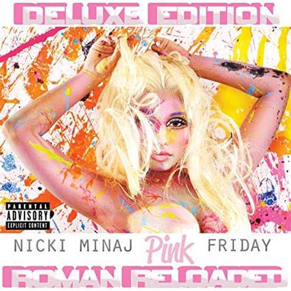

|  | Nicki Minaj is undoubtedly one of the most influential rap artists of our time. She has shaped the rap industry not just for her femme successors but for the entire male-dominated game. She's collaberated with many artists, printing lively songs with her unique, deadly, and melodic flow. Her discography is as extensive and diverse as her fashion sense. After internal debate, I chose Nicki's 2011 "Pink Friday...Roman Reloaded", simply because it contains the most bangers reminding me of my younger years. One such banger being the classic Starships. |